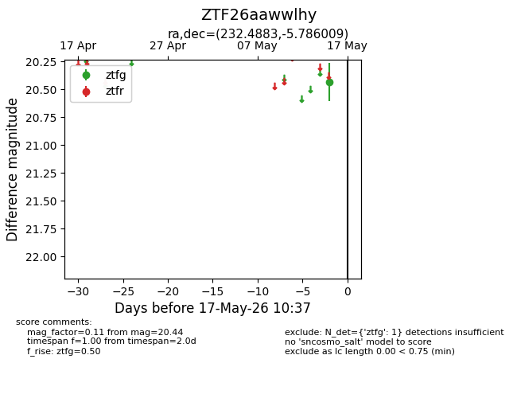
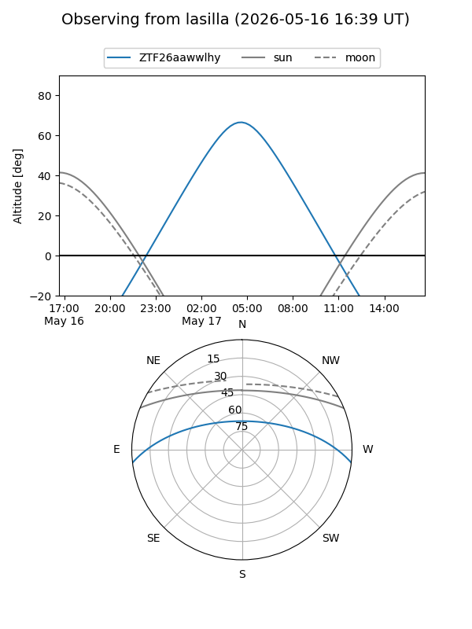
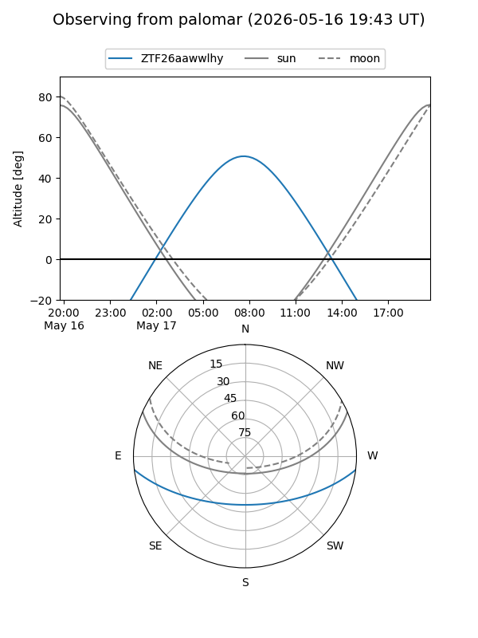

ZTF26aawwlhy
Target ZTF26aawwlhy at 2026-05-17 10:39
Aliases and brokers:
FINK: link
Lasair: link
ALeRCE: link
alt names
ZTF26aawwlhy (ztf,fink_ztf)
Coordinates:
equatorial (ra, dec) = 232.4883,-5.78601
equatorial (HMS+DMS) = 15:29:57.20,-05:47:09.63
galactic (l, b) = (358.2480,+39.49423)
Flags:
Photometry:
last ztfg=20.44
1 ztfg detections
Lightcurve

Visibility


Additional plots